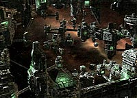
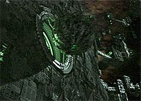
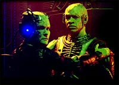
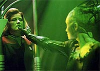
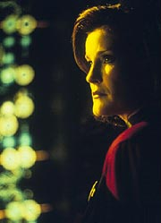
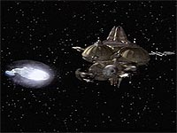
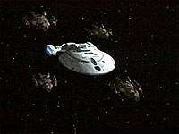

|
Janeway
vs. Primeira Diretriz, Parte VI
 Durante
o primeiro semestre de 2000, a UPN e a Paramount anunciaram que
renovariam o contrato do elenco de Voyager para apenas mais
uma temporada, seguindo o padro estabelecido por A Nova Geração
e Deep Space Nine. Mas, embora a série caminhasse rumo ao
seu último ano, a nave-tema ainda estava cerca de 30 mil anos-luz
do quadrante Alfa. Durante
o primeiro semestre de 2000, a UPN e a Paramount anunciaram que
renovariam o contrato do elenco de Voyager para apenas mais
uma temporada, seguindo o padro estabelecido por A Nova Geração
e Deep Space Nine. Mas, embora a série caminhasse rumo ao
seu último ano, a nave-tema ainda estava cerca de 30 mil anos-luz
do quadrante Alfa.
 Para
os roteiristas, era todo o tempo restante para criar novas
possibilidades e solucionar questões importantes, como a problemtica
Borg. Decidiu-se que nessa transio o pblico veria a ltima
grande apario dos viles cibernticos no seriado, em um episódio
duplo que marcaria o espetacular retorno de sua malfica
rainha... Novamente, os telespectadores iriam se deparar com o
velho problema em torno da Primeira Diretriz.
 No
roteiro do episódio (intitulado "Unimatrix Zero"),
introduzido um tipo de realidade virtual onde alguns drones
Borgs se refugiam quando entram no ciclo de regenerao. L,
recuperam sua individualidade e tentam retomar suas vidas. Porm,
a Rainha Borg nota a ausncia das mentes na coletividade e parte
para a caa aos renegados, levando-os a pedir ajuda a Seven of
Nine.
 A
questo da diretriz vem tona no momento em que a capitã
Janeway elabora um plano para espalhar um nanovrus na mente
coletiva. Quando liberado, permite aos drones manter suas memrias
e individualidade aps a regenerao. A ideia era formar um
movimento de resistncia. Na mais ambiciosa e arriscada missão
de suas carreiras, Janeway, Tuvok e Torres voluntariamente se
transportam para um cubo ttico Borg, onde so assimilados.
 Esse
, sem dúvida um dos mais controversos episódios da série e de
todo o universo de Jornada. No s a capitã estava destinada a
mudar toda uma sociedade, mas também se dispunha a arriscar a
vida de toda a sua tripulao. Se a Federao descobrisse um
meio de acabar de vez por todas com os Borgs, provavelmente o
faria, dada a ameaa ao quadrante Alfa. Mas o fato que Janeway
tinha rixas pessoais com a rainha, disputas que remontam quinta
temporada.
No existe aqui a inteno de revelar todo o roteiro, mas basta
dizer que os oficiais, obviamente, no permaneceram
assimilados... Em poucas semanas, estavam prontos para outra.
 Mais
alguns anos-luz e a Voyager chega ao episódio "Flesh and
Blood". A história faz referncia aos eventos ocoridos
no quarto ano, época em que aparecem os Hirogen, uma raa de caadores
nmades. Em "Killing Game", Janeway d a
tecnologia dos holodecks ao inimigo, durante negociaes de
cessar-fogo. O que ela no antecipou que os Hirogen criariam
instalaes inteiras de treinamento com hologramas. Eles os
aperfeioariam a ponto de os programas superarem seus criadores e
extermin-los.
 A
capitã se v assombrada por um fantasma do passado. Alm de
alterar profundamente uma cultura, de certa forma responsável
pela gnese de outra e forada a enfrentar ambas. É claro que
no meio está a USS Voyager e seus tripulantes inocentes. A
repercusso quase catastrfica, mas a vida deve continuar no
quadrante Delta.
No perca a análise final na próxima parte do artigo "Janeway
vs. Primeira Diretriz".

Daniel
Sasaki co-editor do Trek
Brasilis
|